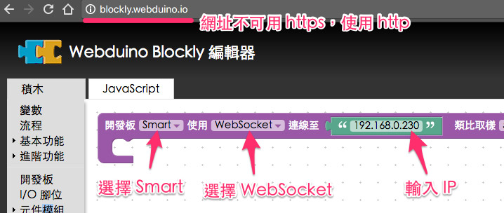
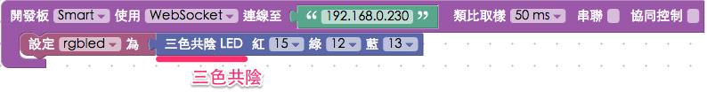

Smart 三色燈初體驗
Webduino Smart 開發板有內建了一個微型三色 LED 燈 ( 共陰 )，預設的接腳為紅 15，綠 12，藍 13，這表示我們可以直接透過 Smart 發出各種顏色。
Webduino Blockly 操作解析
首先我們放入開發板的積木，下拉選單選擇 WebSocket ( 注意，使用 WebSocket 的工具網址必須是 http 開頭 )，填入開發板的 ip 位址 ( 如果不清楚 ip 位址是什麼，請看 Webduino Smart 初始化設定 )

放入三色共陰 LED 燈的積木，紅 15，綠 12，藍 13。

打開網頁互動的積木清單，使用按鈕 1 ~ 5 的積木，裏頭擺入不同的顏色。

點選右上方紅色按鈕執行，如此一來我們在網頁互動測試區裡點選不同的按鈕，就會出現不同的顏色。 ( 解答：http://blockly.webduino.io/#-KbJUkHomagX2_bcXNKX )

範例解析
HTML 的 header 引入 webduino-all.min.js，目的在讓瀏覽器可以支援 WebComponents 以及 Webduino 所有的元件，如果是用 Blockly 編輯工具產生的程式碼，則要額外引入 webduino-blockly.js。
<script src="https://webduino.io/components/webduino-js/dist/webduino-all.min.js"></script>
<script src="https://webduinoio.github.io/webduino-blockly/webduino-blockly.js"></script>
程式碼的部分可以看到是走 WebSocket 的模式：{board: 'Smart', url: '192.168.0.230'}，其他的程式碼就只是純粹點選按鈕控制顏色的程式碼而已。
var rgbled;
boardReady({board: 'Smart', url: '192.168.0.230'}, function (board) {
board.systemReset();
board.samplingInterval = 50;
rgbled = getRGBLedCathode(board, 15, 12, 13);
document.getElementById("demo-area-05-btn1").addEventListener("click",function(){
rgbled.setColor('#ff0000');
});
document.getElementById("demo-area-05-btn2").addEventListener("click",function(){
rgbled.setColor('#3333ff');
});
document.getElementById("demo-area-05-btn3").addEventListener("click",function(){
rgbled.setColor('#009900');
});
document.getElementById("demo-area-05-btn4").addEventListener("click",function(){
rgbled.setColor('#ffcc33');
});
document.getElementById("demo-area-05-btn5").addEventListener("click",function(){
rgbled.setColor('#000000');
});
});
以上就是 Smart 三色燈初體驗。 完整程式碼：http://bin.webduino.io/ruyed/1/edit?html,js,output 解答：http://blockly.webduino.io/#-KbJUkHomagX2_bcXNKX
如果您還想了解更多，可以參考：
2. Blockly 教學：https://goo.gl/Y8sRkl
3. 產品總覽：https://webduino.io/buy.html
4. 露天賣場：http://goo.gl/0Dj9ip

Webduino 學習手冊
Webduino 最豐富的教學網站上線囉，本篇文章已經有新的版本，點選『 』前往閱讀吧。如果想看更完整的教材，可以到 Webduino 學習手冊了解更多資訊。
立即前往